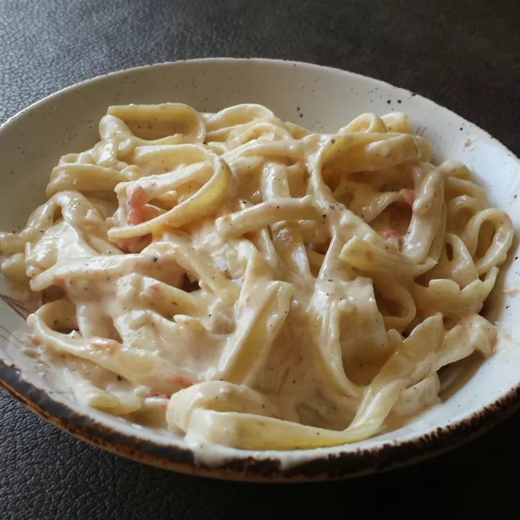

Macarrão ao Molho Branco com Bacon

Receita deliciosa de macarrão com molho de batata e bacon
Com ingredientes simples e de preparo fácil, esse macarrão será o favorito da sua família!
ingredients
- 500g de Macarrão
- 2 Batatas Descascadas
- 50g de Requeijão
- 200 gramas de bacon
- 1 cebola picada
- 2 Dentes de alho
- 100 g de queijo mussarela
- Sal e pimenta do reino
Modo de Preparo
- Cozinhe o macarrão em água fervente
- COzinhe as batatas
- Adicione as batatas e o requeijão em um liquidificador e bata até formar um creme
- Numa panela, frite o bacon picado com a cebola e o alho
- Adicione o creme com o bacon e mexa
- Adicione o macarrão à mistura, o sal e a pimenta do reino à gosto
- Adicione o queijo e mexa até derreter por completo